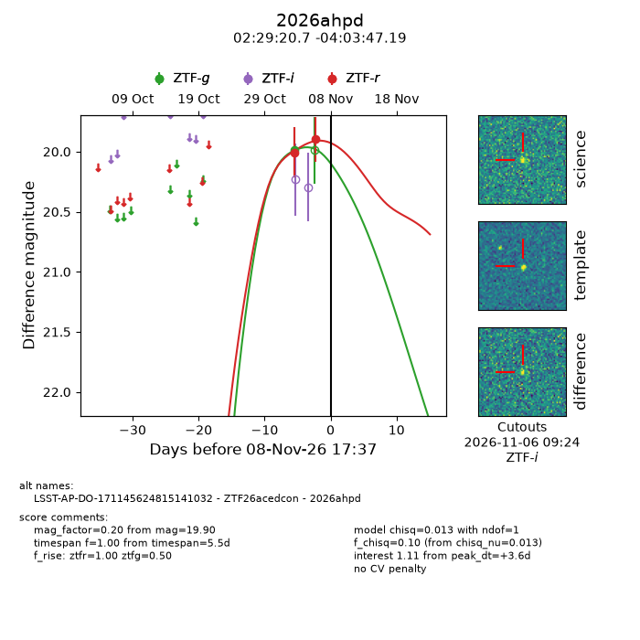
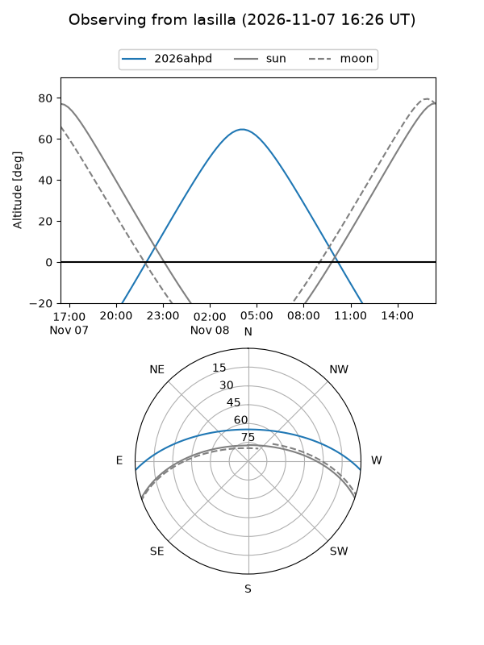
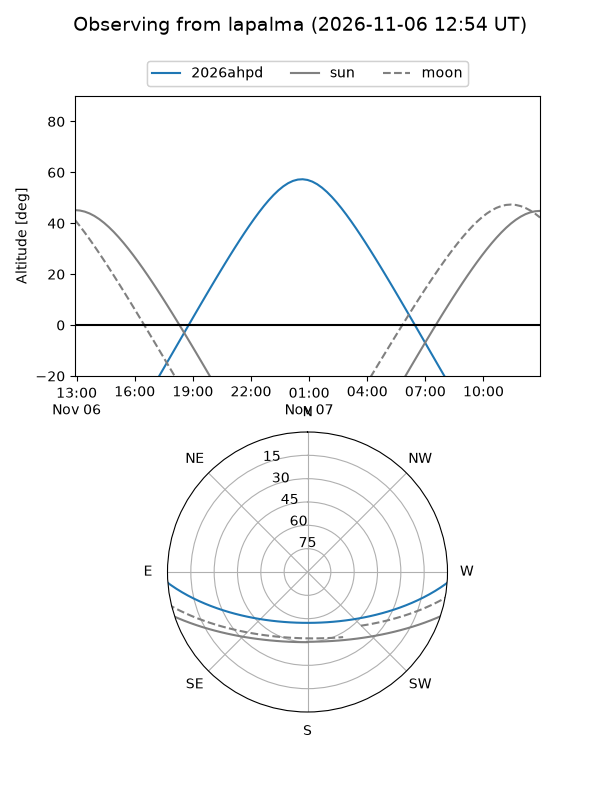
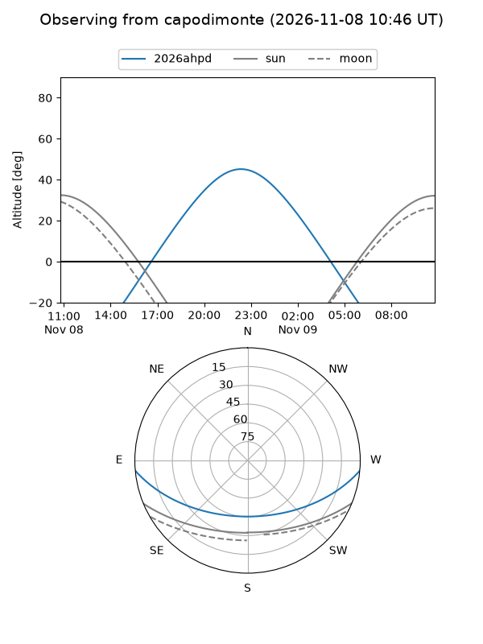
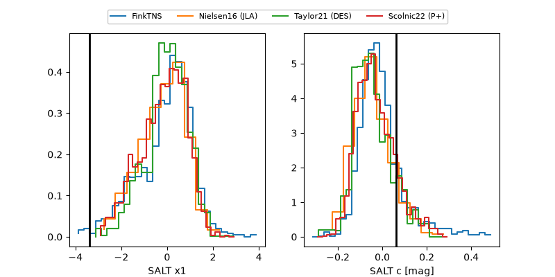

2026ahpd
Target 2026ahpd at 2026-11-08 17:39
Aliases and brokers:
FINK-ZTF: ztf.fink-portal.org/ZTF26acedcon
Lasair-ZTF: lasair-ztf.lsst.ac.uk/objects/ZTF26acedcon
ALeRCE-ZTF: alerce.online/object/ZTF26acedcon
YSE-PZ: ziggy.ucolick.org/yse/transient_detail/2026ahpd
TNS name: wis-tns.org/object/2026ahpd
Direct TNS query: direct search
alt names
ZTF26acedcon (ztf,fink_ztf)
2026ahpd (tns,yse)
LSST-AP-DO-171145624815141032 (iau_lsst)
Coordinates:
equatorial (ra, dec) = 37.3363,-4.06311
equatorial (HMS+DMS) = 02:29:20.72,-04:03:47.19
galactic (l, b) = (172.5989,-57.16934)
Flags:
peak dt: +3.6
Photometry:
last ztfg=19.98, ztfr=19.90
1 ztfg, 2 ztfr detections
Lightcurve

Visibility



Additional plots
